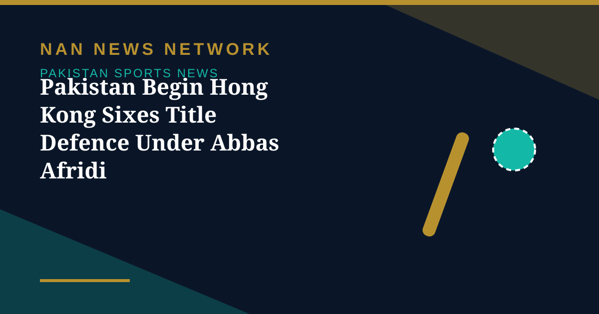

Pakistan Begin Hong Kong Sixes Title Defence Under Abbas Afridi

Pakistan will compete in the Hong Kong Sixes 2026 from October 30 to November 1 at the Tin Kwong Road Recreation Ground in Hong Kong, entering the tournament as defending champions after winning the 2025 edition. The Pakistan Cricket Board announced a seven-player squad on October 9, with Mohammad Abbas Afridi named captain.
Twelve teams will contest the fast-paced six-a-side format, divided into four groups of three. Pakistan have been placed in Group C alongside India and the United Arab Emirates, and will begin their campaign against the UAE on October 30 before facing India later the same day. The team is scheduled to depart for Hong Kong on October 28.
The squad
Alongside captain Abbas Afridi, the squad features batter Abdul Samad, all-rounders Ahmed Daniyal and Saad Masood, batter Muhammad Irfan Khan, wicketkeeper Khawaja Nafay and batter Muhammad Shahzad, with Raza Kitchlew as team manager. The compact squad reflects the six-a-side format, where every player must contribute with bat, ball and in the field.
Pakistan clinched the title last year, their sixth overall, by defeating Kuwait in the final, and will aim to retain the trophy against a strong international field. Australia, hosts Hong Kong China and England make up Group A, while Bangladesh, Scotland and Sri Lanka are in Group B, and South Africa, Oman and Afghanistan form Group D.
Format and knockout path
The opening day will feature nine matches, with group-stage fixtures completed on October 31. The top-ranked team from each group will progress to the Cup semi-finals, the second-placed sides will contest the Plate semi-finals, and the third-placed teams will compete in the Bowl semi-finals. For Pakistan, the group clash with India on the opening day is the standout fixture, and a strong start against the UAE will be key to topping the group and keeping the title defence on track.
Sources: Geo News, October 2026; IPL.com, October 2026.
More on Pakistan Sports News
- Malaysia Edge Pakistan on Penalties to Win Sultan of Johor Cup
- Saim Ayub Released from ODI Squad as Sahibzada Farhan Named Replacement
- Egyptians Sweep Both Titles at Karachi Venus Squash Open
- Shadab Khan's Unbeaten 113 Lifts Pakistan Past England in One-Wicket Tri-Series Thriller
- Babar Azam to Lead New-Look Pakistan Test Squad Against Sri Lanka
- Pakistan's Pink Day: Green Shirts Wear Pink Against England for Breast Cancer Awareness